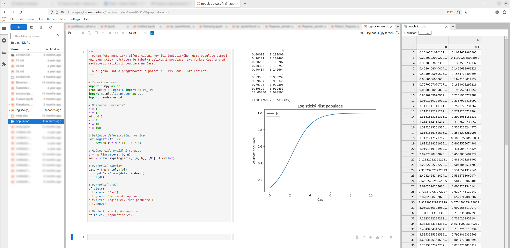

<!—fit—> Funkce, derivace funkcí#
<!—fit—> Diferenciální rovnice#
Robert Mařík
robert-marik.github.io
11.2.2025
Funkce (jedna funkce jedné proměnné)#
Funkce (reálná funkce jedné reálné proměnné): zobrazení z množiny reálných čísel (vstup, nezávislá proměnná) do množiny reálných čísel (výstup, závislá proměnná).
Příklady funkcí v ekologii:
velikost populace v závislosti na čase,
rychlost růstu populace v závislosti na velikosti populace.
Funkce (zobecnění předchozího přístupu)#
Můžeme pracovat s funkcemi více proměnných (více hodnot na vstupu) a vektorovými funkcemi (více hodnot na výstupu):
velikosti populace dravce a populace kořisti v závislosti na čase,
rychlost růstu populace kořisti v závislosti na velikosti populace kořisti a velikosti populace dravce,
rychlosti růstu dvou konkurujících si populací v závislosti na velikostech těchto populací.
Více hodnot zpravidla chápeme v matematice jako vektory, v Pythonu jako
jednorozměrná pole (numpy.array).
Závislá a nezávislá proměnná#
Zpravidla funkce zapisujeme ve tvaru \(y=f(x)\), kde \(x\) je nezávislá proměnná (vstup) a \(y\) je závislá proměnná (výstup, funkční hodnota)
Přímá a nepřímá úměrnost#
Název |
Funkční předpis |
Slovní formulace |
Charakteristická vlastnost |
|---|---|---|---|
Přímá úměrnost |
\(y=kx\) |
Kolikrát se změní jedna proměnná, tolikrát se změní druhá proměnná |
Mění se konstantní rychlostí. Pro kladné \(k\) roste. |
Nepřímá úměrnost |
\(y=\frac kx\) |
Jedna proměnná je přímo úměrná převrácené hodnotě druhé proměnné |
Pro kladné \(k\) klesá. |
Exponenciální funkce#
Název |
Funkční předpis |
Slovní formulace |
Charakteristická vlastnost |
|---|---|---|---|
Exponenciální funkce |
\(y=e^x\) |
Velmi rychlý růst, rychlejší než \(x^k\) v libovolně velké mocnině \(k\) |
Rychlost růstu roste. |
Klesající exponenciální funkce |
\(y=e^{-x}\) |
Velmi rychlý pokles, rychlejší než u nepřímé úměrnosti |
Rychlost poklesu klesá. |
Derivace funkce, rychlost růstu#
Okamžitá rychlost růstu funkce.
Derivace funkce \(f\) proměnné \(x\) se značí \(\displaystyle \frac{\mathrm dx}{\mathrm dt}\).
Zpravidla derivujeme funkce popisující velikost proměnné jako funkci času. Derivace funkce (proměnné() je potom rychlost růstu v čase, tj. změna za jednotku času.
Pro velikosti populace je derivace velikosti podle času dána rozdílem množství živočichů, kteří do populace přibyli a množství živočichů, kteří z populace ubyli.
Derivace funkce, detekce změn funkce pomocí derivace#
Kladná derivace detekuje růst, záporná pokles.
Nulová derivace souvisí s nulovou rychlostí růstu. Nulovou derivaci podel času mají funkce v čase konstantní.
Derivace funkce může být konstantní, tj. rychlost růstu je konstantní.
Derivace funkce může být proměnná, tj. rychlost růstu se mění v čase.
Numericky velké derivace (hodně kladná nebo hodně záporná) znamenají velkou rychlost růstu nebo poklesu.
Diferenciální rovnice#
Rovnice, ve kterých jako neznámá figuruje funkce a v rovnici je i derivace této funkce.
\[\frac{\mathrm dx}{\mathrm dt} = f(t,x)\]Vztah mezi rychlostí růstu funkce a funkčními hodnotami této funkce.
Přirozený jazyk pro vyjádření dějů, kdy stav veličin ovlivňuje rychlost změn těchto veličin. Například velikost populace určuje, jak rychle se bude populace rozvíjet.
Nejběžnější diferenciální rovnice v ekologii#
Rovnice logistického růstu
Slovně: Rychlost růstu je úměrná velikosti populace a volnému místu v prostředí o nosné kapacitě \(K\).
Obecný tvar diferenciální rovnice v ekologii#
označení |
interpretace |
|---|---|
\(\displaystyle\frac{\mathrm dx}{\mathrm dt}\) |
Rychlost růstu. Změna velikosti za jednotku času. |
\(b(t,x)\) |
Rychlost rozmnožování. Počet nových jedinců za jednotku času. |
\(d(t,x)\) |
Úmrtnost. Počet odstraněných jedinců za jednotku času. |
Autonomní diferenciální rovnice#
Pravá strana je nezávislá na čase.
Dynamika populace je dána jenom velikostí populace.
Znaménko funkce \(f\) rozhoduje o rychlosti růstu či klesání.
Konstantní řešení jsou řešení rovnice
\[f(x)=0.\]
Řešení rovnice logistického růstu v Pythonu#
"""
Program řeší numericky diferenciální rovnici logistického růstu populace pomocí
knihovny scipy. Výstupem je tabulka velikostí populace jako funkce času a graf
závislosti velikosti populace na čase.
Slouží jako ukázka programování s pomocí AI. (VS Code + Git Copilot)
"""
# Import knihoven
import numpy as np
from scipy.integrate import solve_ivp
import matplotlib.pyplot as plt
import pandas as pd
# Nastavení parametrů
r = 1
K = 1
N0 = 0.1
a = 0
b = 10
n = 100
# Definice diferenciální rovnice
def logistic(t, N):
return r * N * (1 - N / K)
# Řešení diferenciální rovnice
t = np.linspace(a, b, n)
sol = solve_ivp(logistic, [a, b], [N0], t_eval=t)
# Vytvoření tabulky
data = {'N': sol.y[0]}
df = pd.DataFrame(data, index=t)
print(df)
# Vytvoření grafu
df.plot()
plt.xlabel('Čas')
plt.ylabel('Velikost populace')
plt.title('Logistický růst populace')
plt.show()
# Uložení tabulky do souboru
df.to_csv('population.csv')
Výstup programu v Jupyter Notebooku#

Dynamika rovnice logistického růstu#
Konstantní řešení jsou \(N=0\) a \(N=K\).
Pro \(N>K\) velikost populace v čase klesá.
Pro \(N<K\) velikost populace roste.
Bod \(N=K\) je globálně atraktivní. Všechna řešení konvergují k této hodnotě.
Vhodnou transformací jednotek je možné dosáhnout toho, že \(r=1\) a \(K=1\). Bez újmy na obecnosti zpravidla uvažujeme tyto hodnoty.